Lewy górny róg: mini karta gracza (twarz z aktualnej skórki, poziom w medalionie, HP, mana, nowa stamina, EXP). Minimapa przeniesiona w prawy górny róg. Dolny pasek podzielony na grupy slotów. Grafika: Codex, ocena i test: Claude.
Wdrożone na world1 — 03.10, 14:25Sprawdzone w prawdziwym kliencie na klonieCofnięcie: backups/hud-20261003-122427/cofnij.sh
W grze (klient Minecraft, GUI 3)
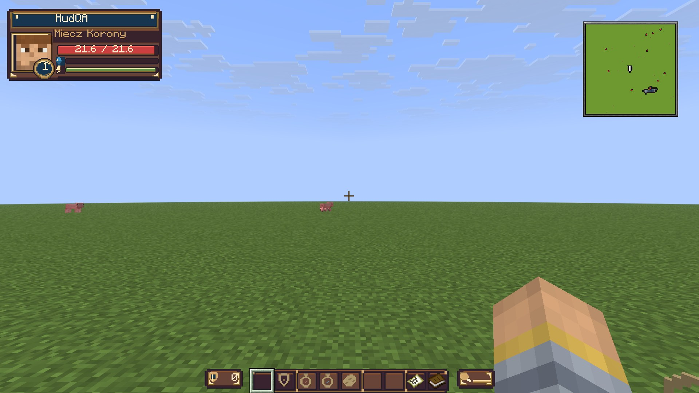
Prawdziwy zrzut z klona po poprawkach: karta w lewym górnym rogu, minimapa w prawym, dolny pasek w grupach. Vanillowe serca, głód i pasek EXP schowane. (Twarz to domyślna skórka konta testowego.)
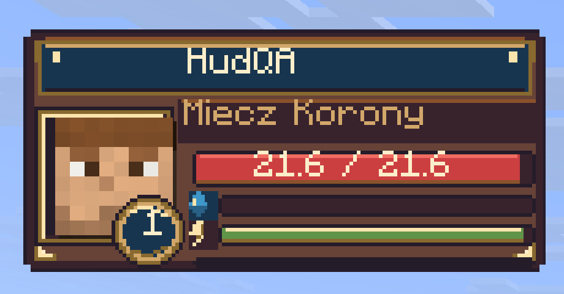
Karta z bliska: pełne HP, mana pusta po śmierci, stamina pełna, poziom 1.
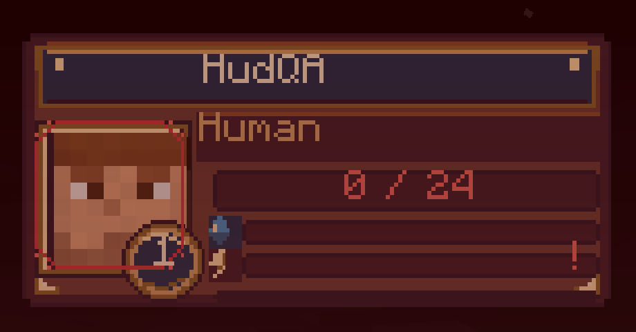
Stan „niskie HP” (ekran śmierci): czerwona liczba, czerwona obwódka portretu, „!” przy pustej staminie.
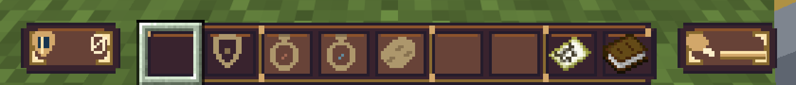
Dolny pasek: tarcza z wartością zbroi, grupy slotów (broń · mikstury · użytkowe · mapa i Dziennik), skrzydło głodu.
Poprawione po teście w kliencie: twarz wychodziła nad ramkę, nick leżał na twarzy, „!” świecił przy pełnej staminie (MythicHUD ignoruje warunki na warstwach tekstowych — napisy warunkowe są teraz osobnymi elementami), vanillowe serca nie chowały się (teraz przezroczyste tekstury w paczce), HP pokazywało ułamki (21.6), ramka minimapy znikała. Minimapa jest teraz ukryta w kreatorze i przy wyborze postaci. Tabliczkę współrzędnych usunąłem — mapa i HUD liczą piksele inaczej, więc przy różnych skalach GUI rozjeżdżała się.
Makieta karty (×4)
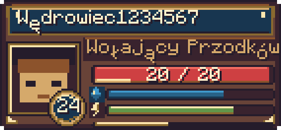
Granatowa tabliczka z nickiem jak tytuł Księgi, złota oprawa portretu, medalion poziomu, paski w trzech tonach. Kropla = mana, błysk = stamina.
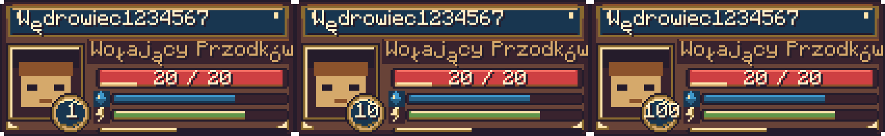
Medalion dla poziomu 1, 10 i 100.
Polskie litery (ę, ż) w makiecie odjeżdżają w dół. To błąd skryptu makiet, w grze rysuje je czcionka Minecrafta. Sprawdzę w kliencie.
Cały ekran, GUI 3
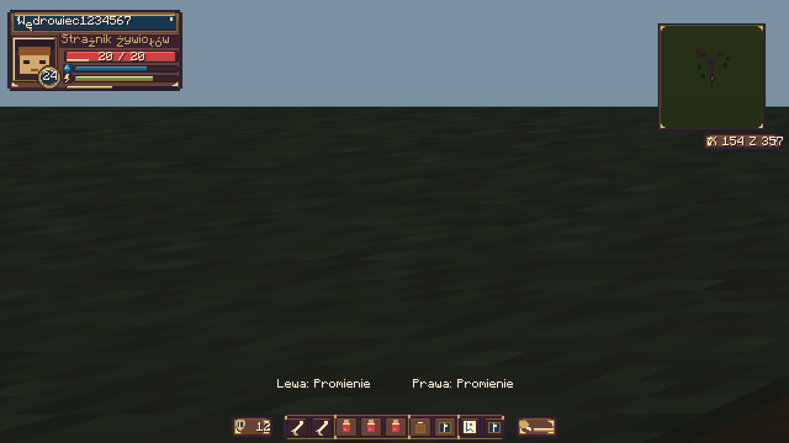
Pełne HP. Minimapa po prawej z tabliczką współrzędnych; zbroja (tarcza + liczba) i głód (udziec + pasek) przy końcach paska; nazwy zaklęć nad swoją stroną.
Walka Chowańców: panele przeciwnika i stwora zjechały pod kartę. W makiecie to szare prostokąty, w grze zostają obecne grafiki.
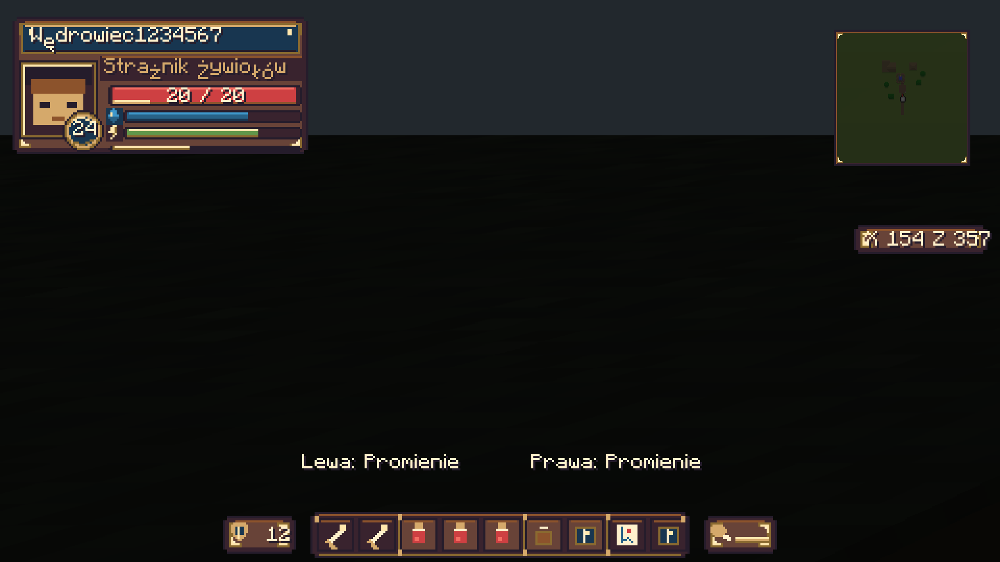
Noc, GUI 4: czytelność na ciemnym tle.
Dolny pasek: dwa warianty
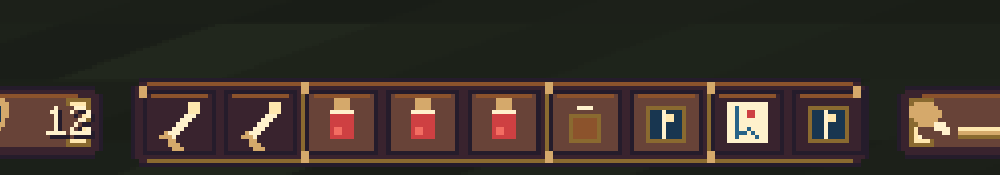
Wariant B (polecany, jest w plikach): grupy slotów rozdzielone złotymi przegrodami. Broń P/L · 3 mikstury · użytkowe · mapa i Dziennik.Wariant A: to samo plus małe zakładki z piktogramami nad grupami.
Wzory z mcmodels
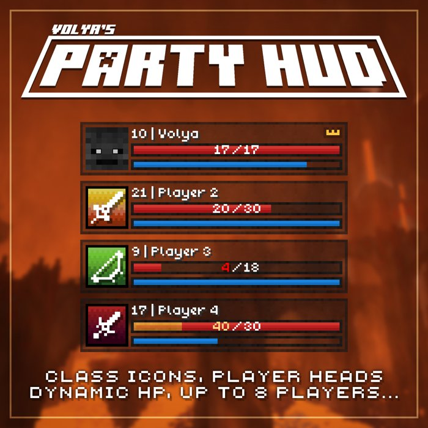
Party HUD (Volya): portret, „poziom | nick”, gruby pasek HP z liczbą, cienka mana. Główny wzór karty.
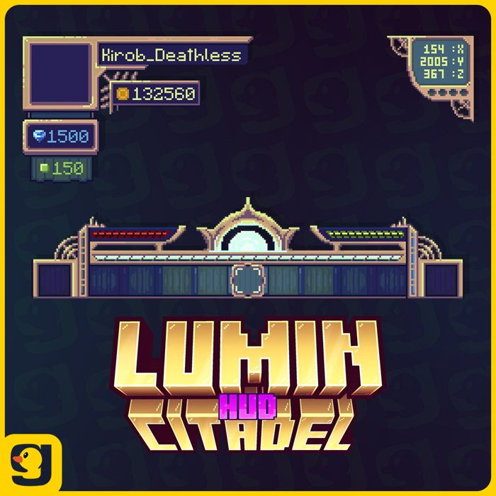
Lumin Citadel HUD: portret w ozdobnej ramce w rogu, obudowa paska, ramka współrzędnych.
Co jeszcze się zmienia
Znikają stare elementy: tekst „Health/Mana” w lewym górnym rogu, vanillowe serduszka, głód i pasek EXP.
Wyłączony pasek MMOCore „♥ | ♦ | ⛨” nad hotbarem, bo dubluje kartę. Komunikaty pluginów idą osobną drogą i zostają.
Stamina: pasek z MMOCore (ta sama, którą zużywa mocny cios).
Akolita: na razie pokazuje manę, bo Dusze nie mają jeszcze placeholdera.
Do sprawdzenia z prawdziwymi graczami
Twarz z prawdziwej skórki postaci (konto testowe na klonie nie ma skórki).
Twarz po zmianie skórki przez CMI, długie nicki, poziom 100.